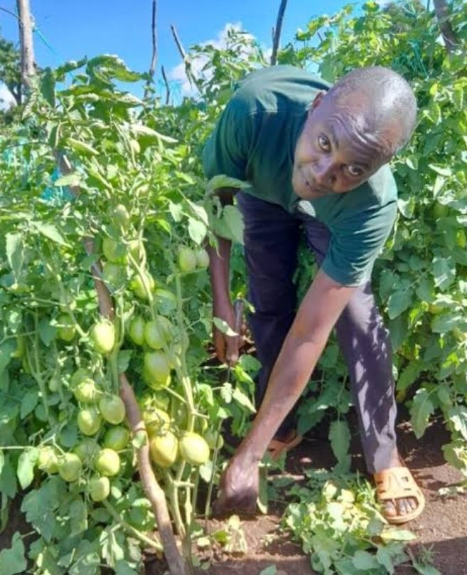

Agriculture & Food
How Technology Is Rewriting Kenya’s Food Story
Across Kenya, technology is helping farmers produce more food despite unpredictable weather, rising input costs and limited access to reliable markets. Mobile phones now connect smallholder farmers to weather forecasts, agricultural advice, digital payments and buyers, while innovations such as irrigation systems, drones and soil sensors are making farming more precise.
This transformation is particularly important because small-scale farmers account for about 75 percent of Kenya’s agricultural output, according to the Ministry of Agriculture’s Agricultural Marketing Strategy 2023–2032. By placing useful information and services in farmers’ hands, technology is gradually changing agriculture from a practice based mainly on experience and guesswork into one guided by timely data.
One of the clearest examples is DigiFarm, a digital platform that links farmers with agricultural information, approved farm inputs, financial services and markets. Through a mobile phone, a farmer can receive advice on planting dates, crop management and pest control, obtain inputs from verified suppliers and access credit for production. The platform has also evolved to incorporate technologies such as drones and Internet-of-Things devices, according to a 2024 scoping report on digital technology in Kenyan agriculture. These services can help farmers use the right inputs at the right time, reduce waste and improve the quality and quantity of their harvests.

Technology is also helping farmers respond to Kenya’s changing climate. Solar-powered irrigation pumps, drip-irrigation systems and water-storage technologies allow farmers to produce crops beyond the rainy seasons. In dry regions, sensors can measure soil moisture and signal when crops need water, preventing both under-irrigation and unnecessary water use. This is a major advantage for vegetable growers, fruit farmers and other producers who depend on regular water supplies. Instead of waiting for rainfall, farmers can use data and efficient equipment to maintain more consistent production throughout the year.

Digital tools are improving crop protection as well. Farmers can use smartphones to identify diseases, consult agricultural experts and receive early warnings about pests or extreme weather. On larger farms, drones equipped with specialised cameras can survey fields and identify areas affected by disease, water stress or poor plant growth before the damage spreads. This allows farmers to apply fertiliser, pesticides or water only where they are needed. The result is lower production costs, reduced chemical waste and healthier crops—benefits that can increase both farm income and the amount of food reaching Kenyan markets.
Technology is also reducing losses after harvest, a critical issue in Kenya’s food system. Digital marketplaces help farmers compare prices, find buyers and organise transport, while mobile money makes it easier to receive payments quickly and securely. Better cold-storage equipment, digital inventory systems and improved processing machinery help preserve perishable products such as milk, tomatoes, vegetables and fruit. When farmers can sell directly or connect with buyers before harvesting, they are less likely to leave produce to spoil or accept extremely low prices from middlemen.
The progress is visible in Kenya’s current policy direction: the government’s agricultural digital policy framework places emphasis on farmer registries, climate services, advisory platforms, market-information systems and traceability tools. The 2025 National Agriculture Production Report also demonstrates the country’s increasing reliance on detailed agricultural data to track production across its counties. Technology is not a single solution to food insecurity, and challenges such as the cost of equipment, poor internet access, limited digital skills and unequal access to finance remain. However, from a farmer receiving advice on a mobile phone to a sensor-controlled irrigation system delivering water precisely, technology is helping Kenya build a more productive, climate-resilient and better-connected food system.